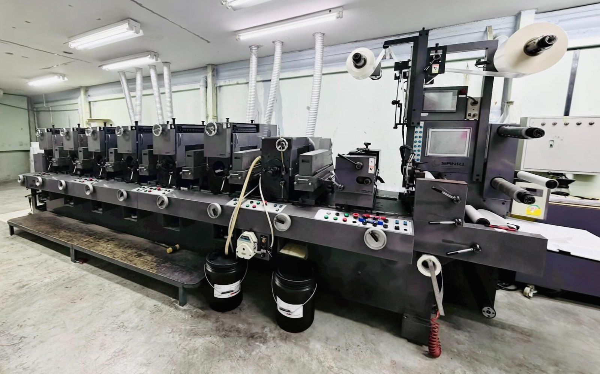
ฉลากและสติกเกอร์ม้วน พิมพ์แม่นยำ
ฉลากและสติกเกอร์ม้วน คมชัดเหมือนภาพถ่าย ไล่เฉดเนียน ตัดเป็นแผ่นได้
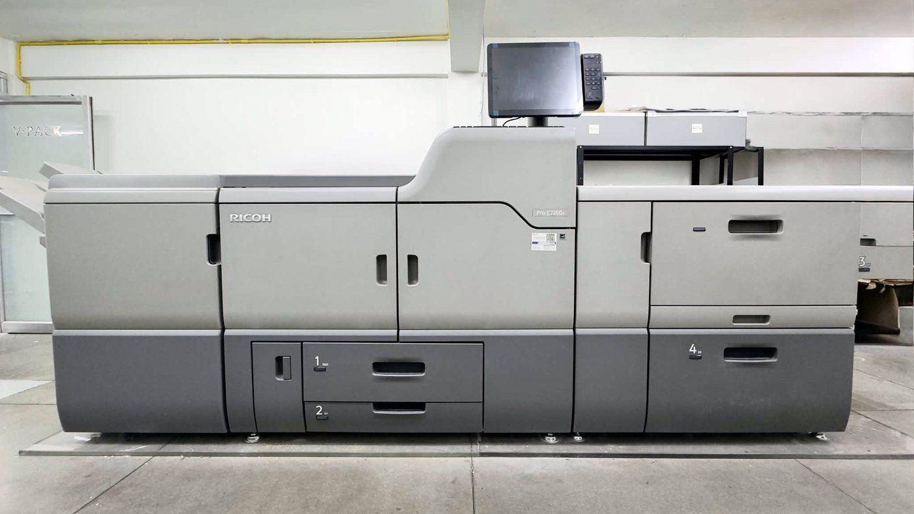
งานด่วน จำนวนน้อย ไม่ต้องทำแม่พิมพ์ ได้งานสวย
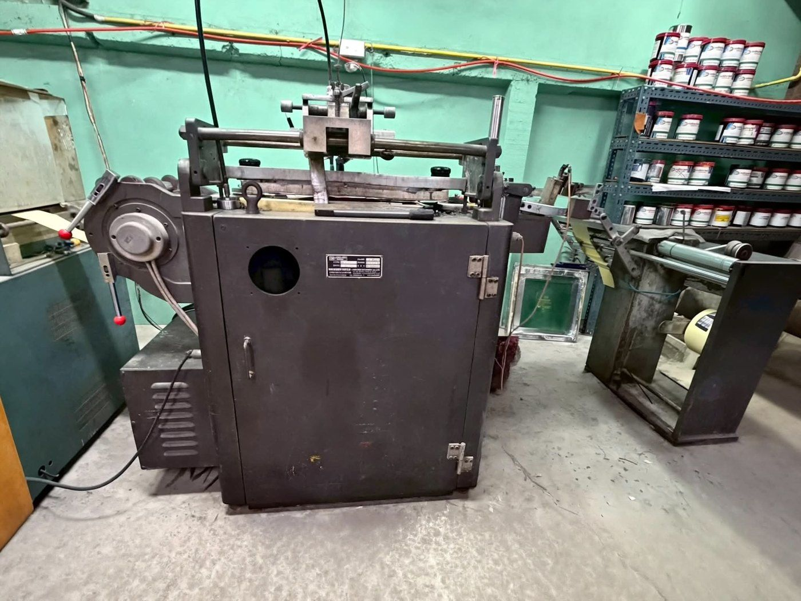
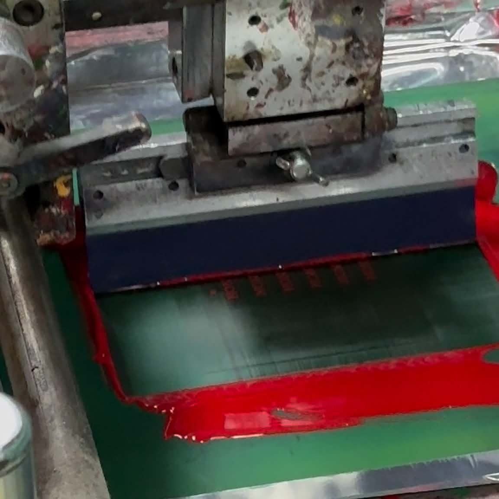
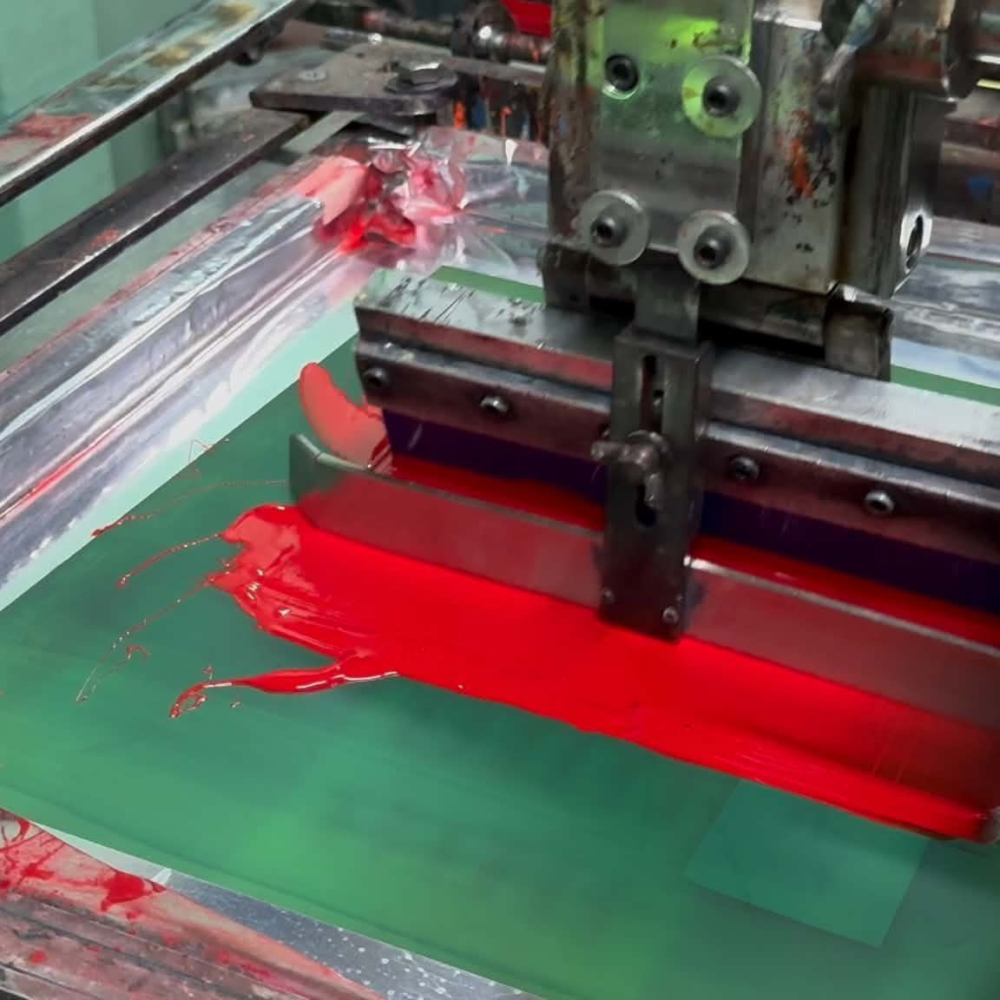
สกรีนบนวัสดุแบบม้วนต่อเนื่อง หมึกหนา สีสด
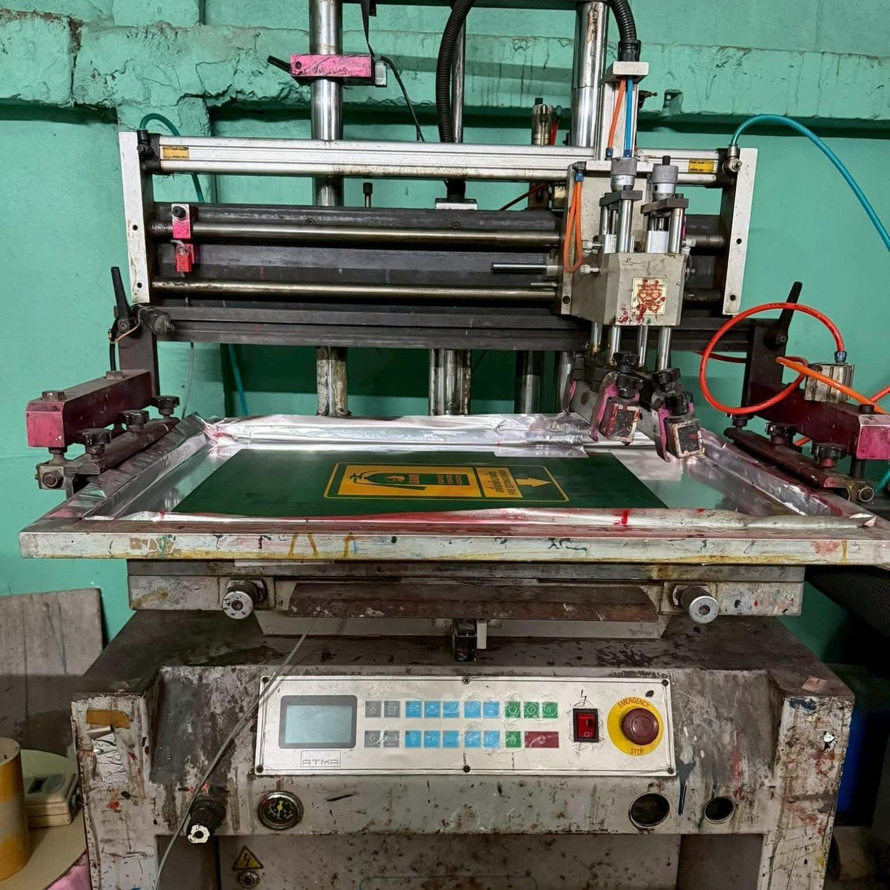
สกรีนทีละแผ่น เหมาะกับป้ายและสติกเกอร์ขนาดใหญ่
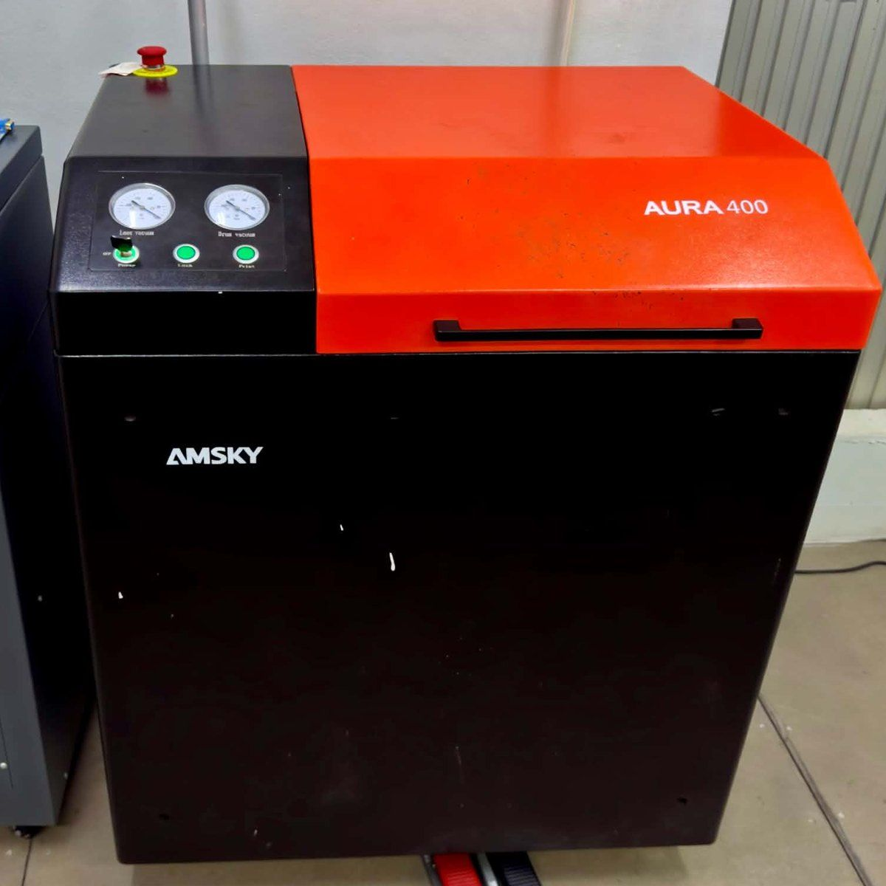
ทำเพลทจากไฟล์งานโดยตรง
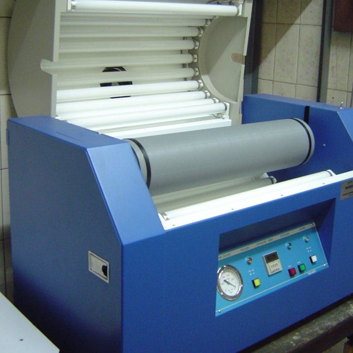
อัดเพลททำแม่พิมพ์
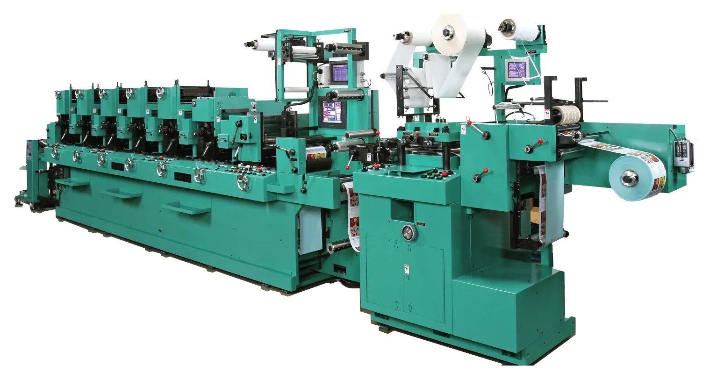
ภาพประกอบ
ไดคัทฉลากเปล่า และงานพิมพ์แถบสี
ผลิตไว แม่นยำสูง รองรับงานล็อตใหญ่
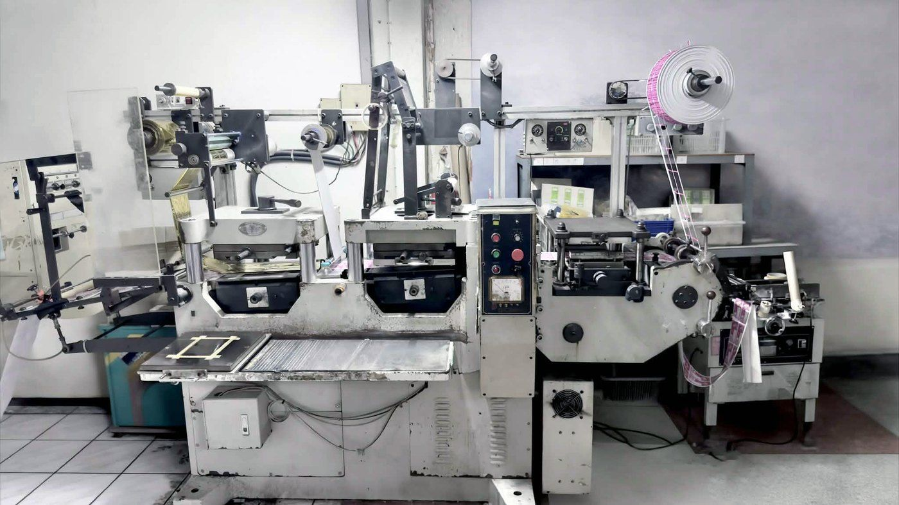
ปั๊มขึ้นรูปคมชัด รองรับงานได้หลากหลาย
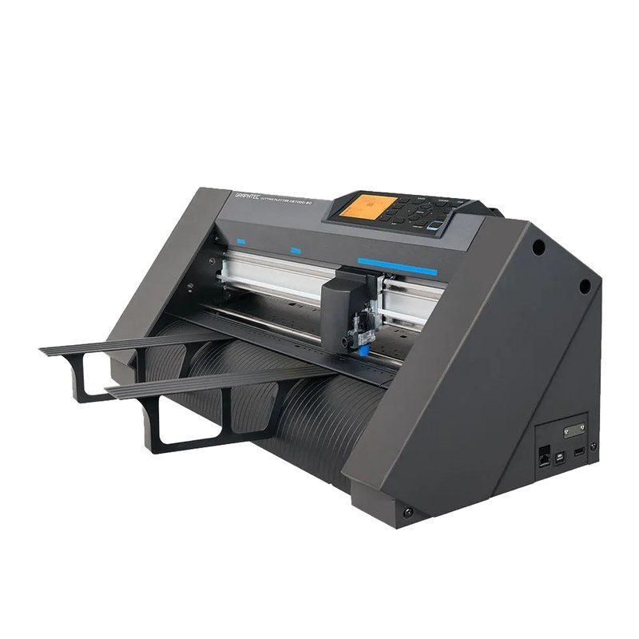
ภาพประกอบจากผู้ผลิต
ตัดตัวอย่างแม่นยำ รวดเร็ว ไม่ต้องขึ้นบล็อก
Graphtec CE7000
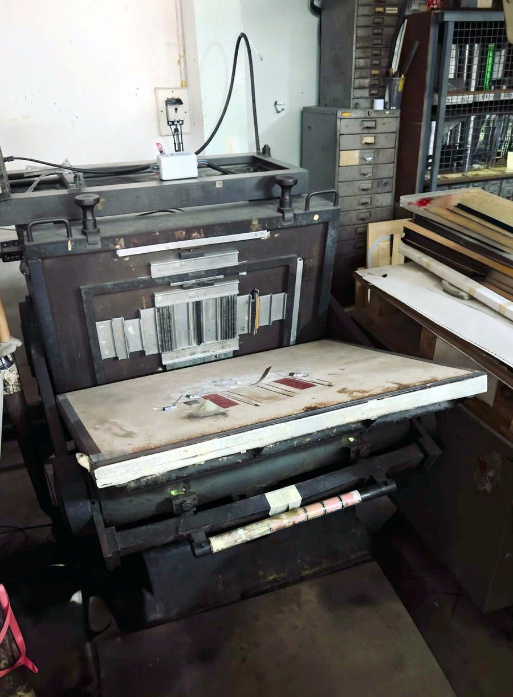
งานปั๊มเนี้ยบ สม่ำเสมอ เพิ่มมูลค่าให้ชิ้นงาน
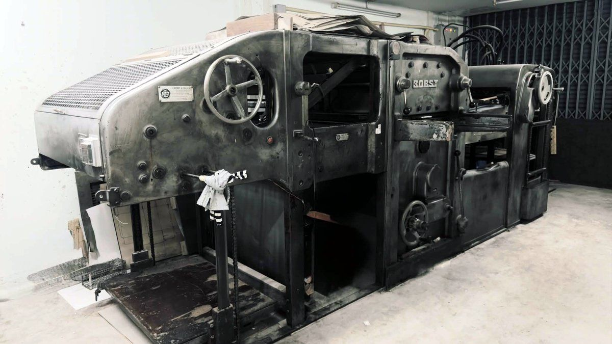
ระบบอัตโนมัติความเร็วสูง รองรับยอดผลิตล็อตใหญ่
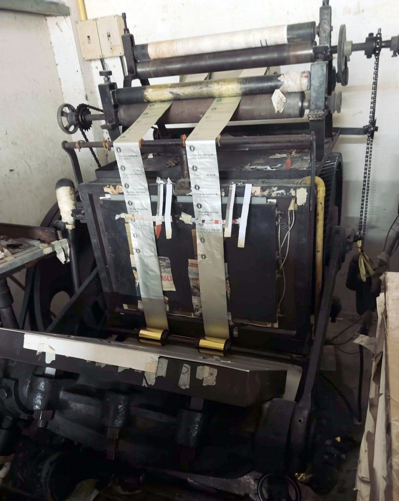
ฟอยล์หลายสี ทั้งทอง เงิน และสีอื่นๆ
สลิทแล้วม้วนกลับ ตามขนาดแกนและจำนวนม้วนที่ลูกค้าต้องการ
งานพิมพ์แบบม้วนที่ต้องการแพ็กเป็นแผ่น ตัดแผ่นที่ท้ายเครื่องปั๊มไดคัทได้เลย
งานทุกชิ้นผ่านการตรวจคุณภาพ (QC) และแพ็กก่อนส่งมอบ
มีโรงปั๊มของเราเอง รับปั๊มฟอยล์ ปั๊มเส้นพับ และปั๊มไดคัท แม้งานพิมพ์มาจากโรงพิมพ์อื่น
ทัก Line สอบถามงานปั๊ม ดูรายละเอียดงานปั๊ม